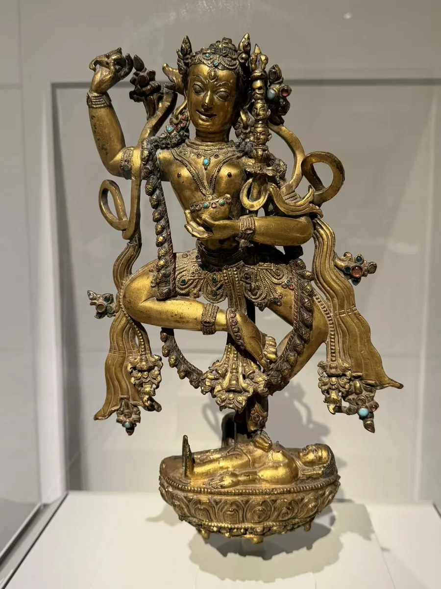
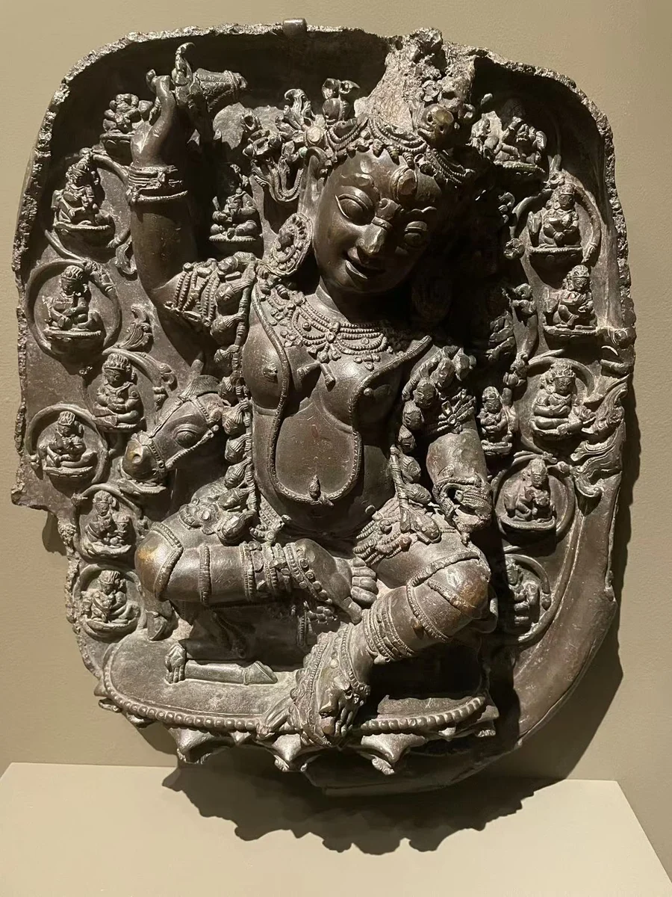
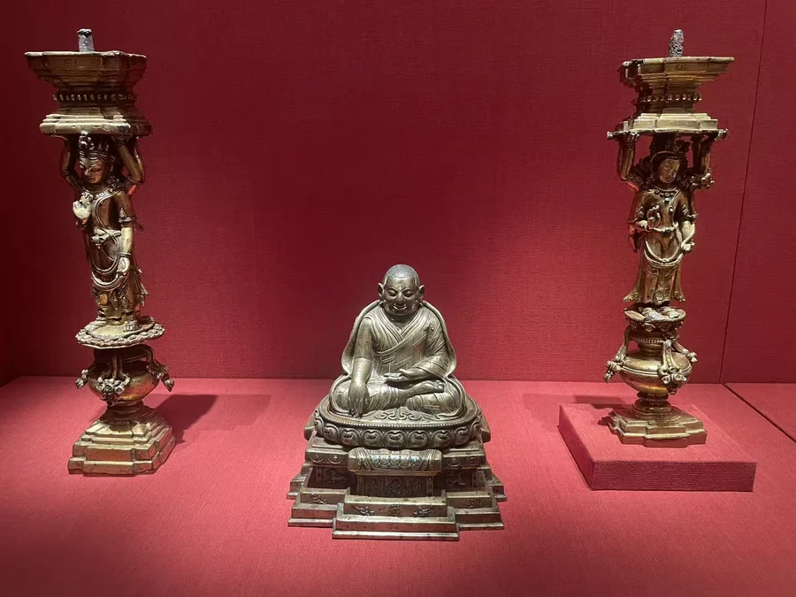

吉祥天母：丹萨替纪念塔构件
迈克尔·C·卡洛斯博物馆
16 / CLOSE LOOKING
同是丹萨替相关作品，舞动的女尊、骑骡的护法和双面承托柱，原本面对的空间并不一样。把三馆所见放在一起，是为了辨认它们各自的角色。

西雅图这尊摄召金刚亥母，一足踏住卧伏的人形，另一腿抬起；帔帛在肩旁卷成回环，手臂与身体之间留出空隙。卡洛斯的吉祥天母则附着于满布小像的背板；克利夫兰的承托柱更直接参与建筑支撑。单尊的轮廓，只是原来宗教空间的一部分。
丹萨替位于西藏中部，起于帕木竹巴·多吉杰布1158年的修行居所，后来逐渐发展为寺院。帕木竹巴传承属于噶举体系；住持的宗教声望、朗氏家族的供养及后来的政治力量，共同支持了这里的营造。 [17] [62]
Estournel区分寺内1170—1570年间历代住持的十八座舍利塔，与其中十三至十五世纪陆续营建的八座大型吉祥多门塔。塔奉安住持舍利，也将教导与传承化为可礼敬的形象：上层围绕舍利塔排列上师与本尊，下层则有佛、供养女神和护法。层数由上往下数。 [62]
馆方以耳侧伸出的小猪首辨认金刚亥母，并将70.2联系到丹萨替的大型鎏金舍利塔或其他祠龛。照片中，曲腿与肩旁的圆形帔帛彼此呼应；骨饰、腰部及飘带末端的镶嵌，让舞姿的轻与金属的重量并置。 [74]
Estournel把本件列作图89，归入约1360年的第二座大型吉祥多门塔上层。他将回环帔帛、骨饰围裙及单层莲瓣等，与1948年照片及相近散藏像比较。这是类型与风格支持的研究归属，尚不是在旧照中找到了同一尊；馆方年代仍为14世纪末至15世纪初。 [71] [72]
吉祥天母斜侧的头、坐骑与环绕的小女神，共同构成一块朝前展开的浮雕。馆方指出，右手所持剑仅余柄部，左手也已失；外围人物所持器物与护法作用有关。它原是丹萨替八座纪念塔之一的构件，这是馆方对来源的明确表述。 [08]
Estournel在图156及相应章节中，将这件作品归于约1386年的第四座大型塔，最下方第六层的北侧。该定位来自他的图像与风格重建；卡洛斯仍标15世纪，本文保留两种记录。最有帮助的观看差别，是这块带背板的护法组合与上层独立舞姿女尊所面对的空间不同。 [71] [73]
照片左右的一对小柱，柱顶平台与人物上举的手臂连成承托关系。馆方说明，向外的一面为四臂菩萨，向塔内的一面则是奏乐或持供物的女神；柱上藏文音节用于指示装配位置。完整用途的解释来自馆方，眼前正面照片只能看到其中一面为主。 [75]
馆方明确将它们归于丹萨替多层塔座，但尚无本对支柱的确切塔号、层位或朝向。Estournel讨论了相近双面柱的样式变化，不能据此把本对嵌进某张原位照片。两侧柱之间的13世纪帕木竹巴肖像，表现寺院创立者；馆方未确认肖像本身出自丹萨替。 [75] [71] [17]
Pietro Francesco Mele在1948年拍下的照片，使今天可以比较塔体层次、人物朝向及饰件的重复。回看西雅图女尊两侧回环的帔帛，再看旧照中的上层舞姿像，会更容易理解Estournel如何建立同类联系。具体塔号与层位仍属于他的归属方案，不是三馆作品共同出土的记录。 [71] [72]
这些构件的重要性，在于让金属造像重新具有方向和关系：有的面对礼拜者，有的朝向塔内，有的承托上层。它们之间的联系可以逐步补全，年代不同、证据强弱不同的部分，也应各自保留。
西雅图70.2：馆方为14世纪末—15世纪初，允许“舍利塔或其他祠龛”的范围；Estournel提出约1360年、第二塔第一层，朝向未定。卡洛斯2001.019.001：馆方为15世纪、丹萨替纪念塔构件；Estournel提出约1386年、第四塔第六层北侧。两者均未在本轮找到与旧照片单尊逐点吻合的论证。 [74] [08] [71]
克利夫兰2011.144.1–2：现行馆录作15世纪，旧展签作1360—1430年；该对的具体塔位未定。中央肖像1993.160与寺院的关系来自所表现的人物，和构件的原属地点是两回事。 [75] [17]
西雅图记录1969年10月购自William H. Wolff，1970年登记入藏；卡洛斯记录1997年纽约苏富比第116号，2001年经Kapoor Galleries购入；克利夫兰记录2008年佳士得第617、618号及Flower家族收藏，2011年入馆。这些节点尚未补全各件离开寺院的经过。 [74] [08] [75]
本轮直接阅读Estournel的在线研究及图89、156，并核对三馆记录。2014年《Golden Visions of Densatil》中的展品号与页码仅见馆方书目，未作为已独立核读的原页引用。旧照片继续外链研究原页，不转载。 [71] [74] [08]
先比较身体怎样占据空间：西雅图女尊向四周展开；卡洛斯护法与背板形成一组；克利夫兰双面柱朝向内外两侧。同柜中央的创寺者肖像，作为人物背景单列。
图片按各自比例展示，实物不等大。

鎏金铜合金嵌半宝石
馆方认定为丹萨替纪念塔构件，断为15世纪。Estournel提出约1386年、第四座大型塔第六层北侧的归属，具体原位仍属研究重建。
[08] [71] [73]
鎏金铜合金，金银铜与宝石镶嵌
照片中央为创寺者肖像；两侧为另列的一对承托柱。肖像表现丹萨替创寺者，馆方未据此确认它原属丹萨替寺。
[17]鎏金铜合金
照片左右为一对承托柱，中央肖像另列。现场展签定为1360—1430年；已核对的单件馆录2011.144.1现标15世纪。
[18] [75]作品基本资料据现场展签及下列馆方记录整理；文字中的观看描述基于这里的现场照片。